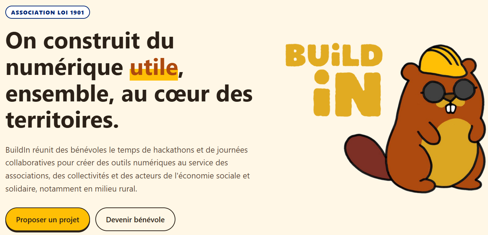

Buildin - A website for my associatione
HTML / CSS deployed on Cloudfare
Simple website for my association to expose our projects portfolio. Hope to get more new projects next year! You can check it out at buildinasso.org.
Code on the association's GitHub.
